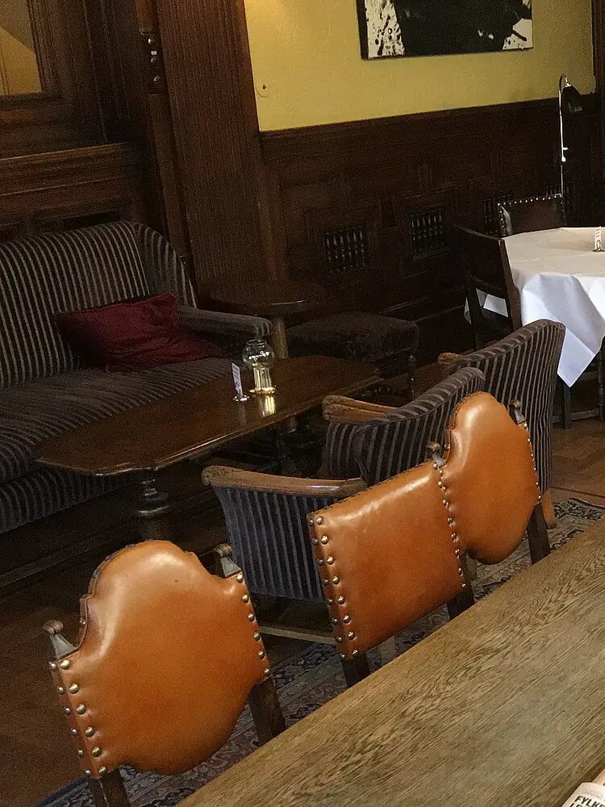

Presqu’île, 2e arrondissement
Wallace Snug
Un petit bar à whisky : plus de 200 références, des gins, des cocktails et des pressions. De la place pour parler.
2 rue Thomassin, Presqu’île
Aujourd’hui
Horaires provisoires. Appelez le 09 81 95 10 61 pour confirmer.
Whisky

À la goutte
Une sélection de whiskies d’Écosse, d’Irlande et du monde, servis nature, sur glace ou en cocktail.
La liste change : demandez conseil au comptoir.
Carte
- Whiskies
- Gins
- Cocktails
- Bières
- Vins
- Sans alcool
- Snacks
Happy hour tous les jours, de 16h à 20h. Carte et prix sur place.
Ambiance
Un coin tranquille
Un décor d’inspiration écossaise, une lumière basse. Un snug, c’est un petit salon où l’on se retrouve pour discuter, pas pour crier par-dessus la musique.
Terrasse couverte, ouverte toute l’année. Quelques matchs sur 2 écrans (Ligue des champions, Premier League, équipe de France).

Ici, on vient pour parler.
Infos pratiques
2 rue Thomassin
69002 Lyon, Presqu’île
Entrée accessible en fauteuil roulant. Wi-Fi gratuit. Chiens acceptés.
Itinéraire Google MapsHoraires provisoires
| Jour | Bar |
|---|---|
| Lundi | 16h-01h |
| Mardi | 16h-01h |
| Mercredi | 16h-01h |
| Jeudi | 16h-01h |
| Vendredi | 16h-01h |
| Samedi | 16h-01h |
| Dimanche | 16h-01h |